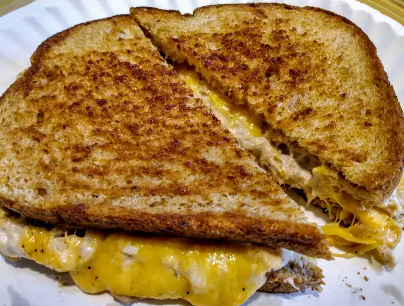

Homepage
Tuna Melt

Description
I simple tuna melt sandy!
Ingredients
- 2 English muffins, split
- 1 (5 ounce) can tuna, drained
- ½ small onion, minced
- pepper to taste
- 12 slices pickled jalapeno
- 4 slices Cheddar cheese
Steps to Make
- Get Bread
- Toast Bread
- Mayo on Bread
- Tuna on Bread
- Put bread together